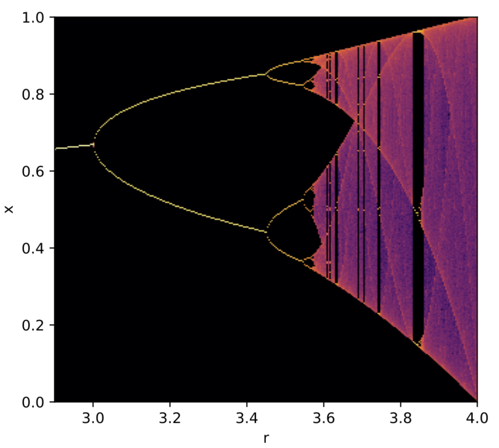
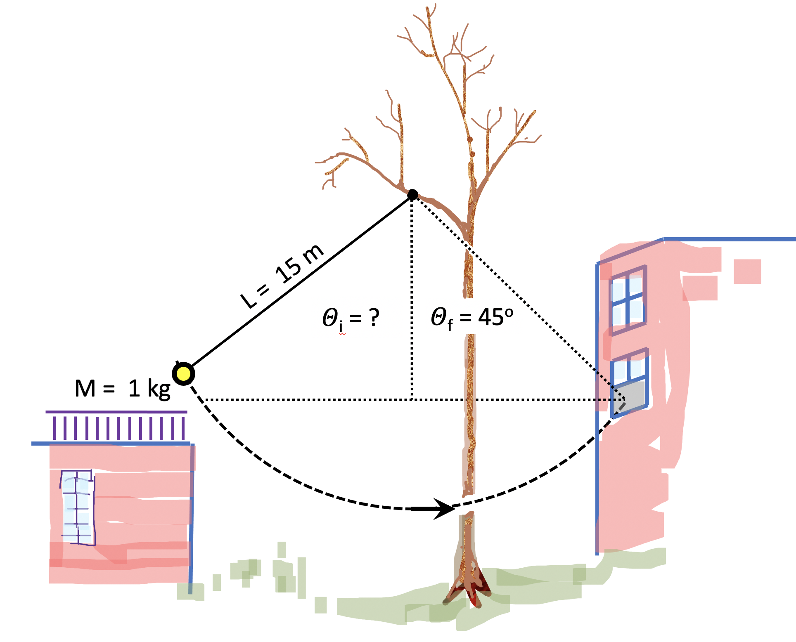

Final Exam
Exercise 0.
Here the rules for this exam. Consider it open-book, open-internet,
except that you are not to communicate with anyone except the
instructor about anything related to this exam. You will find all
kinds of help, code snippets, etc., online. If you make use of any
online material, provide a citation, link or acknowledgment
as a comment in your code.
As a reminder of the university's commitment to academic integrity
everyone must submit the following
statement, copied and filled in with your name and date.
I pledge that I will not give or receive any unauthorized help on
this exam, and that all work will be my own. I understand that
any breach of this pledge constitutes Academic Dishonesty as
defined by the University of Utah Code of Student Rights and
Responsibilities.
Name ________________________ Date_____________
Submit it in a text file pledge.txt, in the usual way:
submit p6720 final pledge.txt
Thanks!
You've worked hard. You've got this!
Exercise 1.
Start with this text file and insert your
answers to the questions contained therein.
Save the file with your answers as final.txt
and submit it...
submit p6720 final final.txt
Exercise 2.
Discrete dynamics! Here we consider the growth of some population --
maybe a herd of mammals, or even a hypothetical swarm of exotic
particles that can pop in and out of existence in the early universe
(probably not!). The number of individuals in this population,
relative to some maximum possible value, is
x, which can, in principle, range from zero (nobody) to
one (maximum possible number of individuals). If we measure the
size of the population every generation (every year, possibly, in
the case of grazing mammals), we find that it changes
from xi year i
to xi+1 the next year according to
xi+1 = r xi (1-xi)
where rate factor r is in the interval [1,4].
When x is small (<<1), the population grows
geometrically if r>1. The
factor (1-x) in the above equation limits growth
when x climbs above ~0.5, to mimic a situation where
resources are limited (e.g., there is only so much food to go
around in the case of a herd). [This is a famous
logistic map problem related to chaos theory.]
For values of r between 1 and 3, populations that start
with x0, chosen randomly from the interval
(0,1], will settle to a single, equilibrium x-value -- a balance
between the population's ability to reproduce and the limited
resources available. For values of r>3, the growth
dynamics are rich! For example, when r=3.2, over
time, x alternates between 0.513045 and 0.799455 from
year to year, in a rapid boom-bust(?) cycle. As r reaches
4, the dynamics become chaotic. This plot illustrates:

Relative population x as a function of reproduction
parameter r. Initial conditions were choses randomly; the first
1000 of 8000 iterations were ignored; the rest were histogrammed
and plotted, where color correlates with the fraction of
time an evolved population is in some state, x.
In this exercise, write a Python script
called popdyn.py that implements the above "logistic
map" equation. Begin by setting r = 2 and a starting
population x0 drawn from a uniform
distribution with bounds 0 and 1. Then iterate the logistic map (I
recommend hundreds of times, in general) to sample how the
population evolves. Then, do this for two more values, r =
3.63 and r = 4, printing out the last dozen or
so iterations in each case.
Next, run ~500--1000 or so iterations for an array of
equally-spaced r values in a range similar to that in
the plot above, choosing a single, unique, random starting
population x0 for each r
value (r[i]). Plot all r-x pairs every iteration,
choosing enough iterations so that the outcome is representative of
long-term behavior, not the initial conditions. Save your plot in a
file popdyn.png.
Comments: With a lot of points, you may wish to plot each one
with a very small-sized, dot-like marker ("."). No need to
reproduce the color map above, just regular points is fine. Feel
free to choose an interesting range of r values; I
chose [2.9,4] for the figure, but could have "zoomed in" on a
narrower range.
Submit your code popdyn.py and your
plot popdyn.png.
Exercise 3.
The Not-So-Simple Pendulum. Two children are
neighbors. They set up a large pendulum (L=15 m) tied to
a tree branch between their two buildings, as shown:

The children use a little bucket (mass M = 1 kg) at the free end
of the pendulum to deliver messages or small (massless!) toys to
each other (always hand-sanitizing, as appropriate). Since the
children are at the same altitude, they hoped that by displacing the
pendulum exactly 45 degrees from vertical and letting it go from a
standstill, the pendulum might swing from one building to the other,
reaching that same angular displacement and thus conveniently
delivering the contents of the little bucket. However, air
resistence slows the bucket's trajectory. The child on the balcony
(on the left in the figure) found that in order for the bucket to
exactly reach the the open window (on the right), the initial
angular displacement, θi, must be greater than 45
degrees.
Write a script, pendeliver.py (or
pendeliver.mtx), that calculates the initial angular
displacement θi such that the pendulum swings exactly
45 degrees on its first arc, thus reaching the window when launched
from rest by the child on the balcony. Here are particulars:
-
The equation of motion for this pendulum in terms of its angular displacement
is
d2θ/dt2 = -g/L*sin(θ) - C/L/M*(dθ/dt)
g = 9.8 m/s2; L = 15 m; M = 1 kg; C=0.5 N·s/m.
-
The initial conditions are
θ = θi (> π/4), dθ/dt = 0 rad/s.
-
It is recommended that you break up this problems into these
steps:
- Integrate the equation of motion, given initial conditions
as above (non-zero
displacement θi, starting at
rest).
-
Determine the maximum angular
displacement, θf (subscript 'f' for
'final'), when the pendulum swings from the balcony to the window,
given some initial angular
displacement θi.
- Optimize the initial angular displacement so
that θf = π/4 radians.
If you have problems with one step, you can still get credit
for showing how to implement the others.
- Aside: the motion of the pendulum is not very different from
the ideal case, at least over a time scale of a single swing.
Thus, it may be convenient, when choosing integration times,
to recall that the period of an ideal pendulum is
T0 = 2π sqrt(L/g).
Submit your code pendeliver.py
(or pendeliver.mtx).